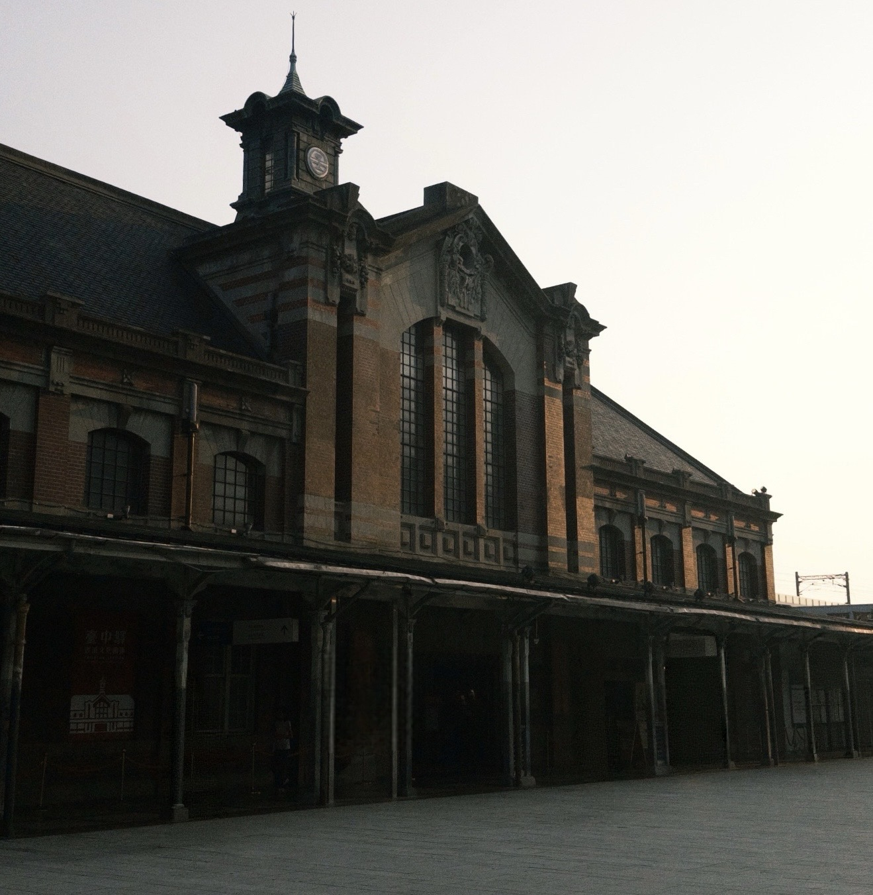

一、園區概念：臺中驛鐵道文化園區
在急速發展的臺中舊城區中，百年鐵道文化資產以全新的姿態重新介入都市生活。本專題以「鐵道綠洲」為核心概念，深入探討國定古蹟臺中舊車站與舊軌道保留區如何在鐵路高架化後，織理出結合歷史記憶、文創與慢活休閒的文化廊道。
「臺中驛」承載了臺灣縱貫鐵路的百年記憶；園區保存了第二代車站建築與舊山線軌道空間，將月台與車廂轉化為歷史展演與在地市民休憩的場所。
本期焦點：百年赤煉瓦建築與舊軌車廂綠廊，從文化報導延伸至位置地圖。
本文為鐵道文化專題研究型教學報導，非現場採訪紀錄。
二、國定古蹟：百年臺中舊站的記憶
臺中舊車站興建於 1917 年（大正 6 年），為西洋古典巴洛克風格結合赤煉瓦造型之建築。高架新站通車後，舊站完整被保存下來，成為臺中驛鐵道文化園區的核心核心意象。
值得留意的三個特色
- 辰野式建築：紅磚搭配白色水平帶裝飾，展現濃厚的百年歷史美學。
- 第一月台與大廳：保留原汁原味的鑄鐵月台柱與候車空間。
- 舊山線門戶：連結後站與綠空鐵道，展現鐵道樞紐的歷史價值。
建議散步順序
以下是本報導規劃的走讀建議，並非官方指定路線。
- 從站前廣場步入，欣賞舊車站紅磚洋樓外觀與鐘樓線條。
- 穿越舊站大廳前往第一月台，感受復古月台與舊軌道氛圍。
- 沿著舊軌步道觀賞歷史車廂展示與文創市集。
- 連結周邊綠川水岸與綠空鐵道，體驗完整的舊城漫步體驗。
三、舊軌新生的車廂廊道
園區保留了地面舊軌道，並引進與靜態展出多款具歷史意義的蒸汽機車與客車車廂。這些停放在軌道上的歷史列車，不僅被活化為主題展覽與文創賣店，更讓民眾能夠近距離接觸與走進車廂內部體驗。
舊軌道區結合了綠化植栽與露天步道，將原本分割城市的鐵軌空間，重新轉化為串聯舊城區生活脈絡的開放式文化公園。
四、園區空間特色比較表
| 比較項目 | 國定古蹟臺中舊站 | 舊軌道與月台展示區 |
|---|---|---|
| 空間型態 | 巴洛克風格紅磚洋樓建築與站體大廳 | 戶外高架/地面舊鐵道與歷史月台廊道 |
| 核心價值 | 建築藝術保存、臺灣縱貫鐵道歷史地標 | 歷史車廂展示、市民休憩與藝文市集空間 |
| 周邊人文 | 串聯站前商圈與舊城歷史文化動脈 | 銜接綠空鐵道空中綠廊與綠川水岸步道 |
五、現場影像與影音紀實

影音報導
透過下方影片認識臺中驛鐵道文化園區的歷史變遷與舊城活化風貌。
六、位置地圖：找到臺中驛鐵道文化園區
園區位於臺中車站核心區域（臺中市中區臺灣大道一段1號），大眾運輸與步行抵達皆十分便捷。
八、資料來源
本報導依下列公開資料整理：
- 臺中驛鐵道文化園區官方網站
- 文化部文化資產局：國定古蹟臺中車站歷史檔案
- YouTube：臺中鐵道園區介紹影片
資料整理日期：2026 年 10 月 28 日。